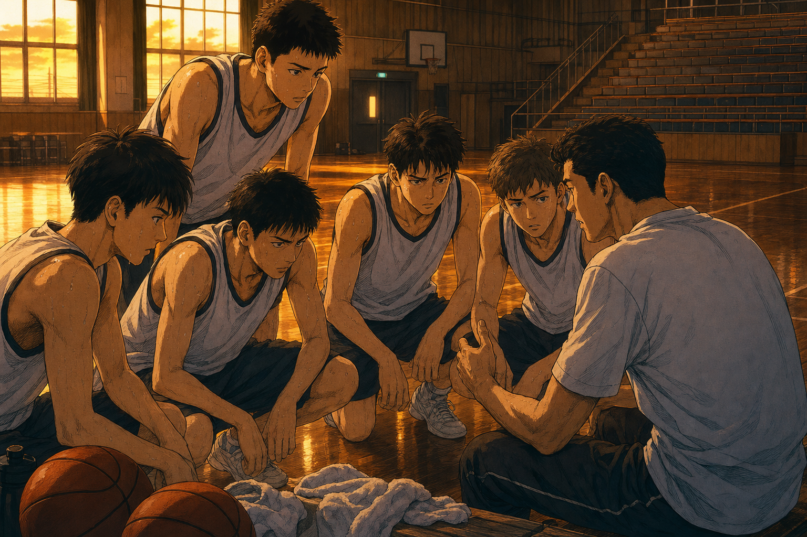
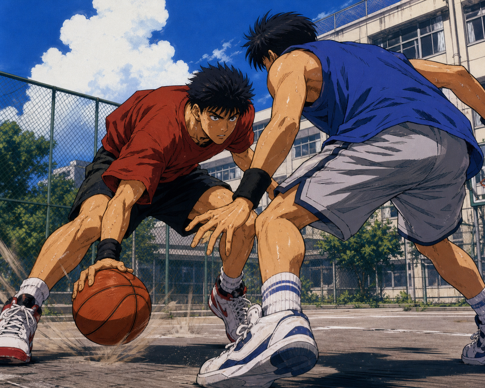
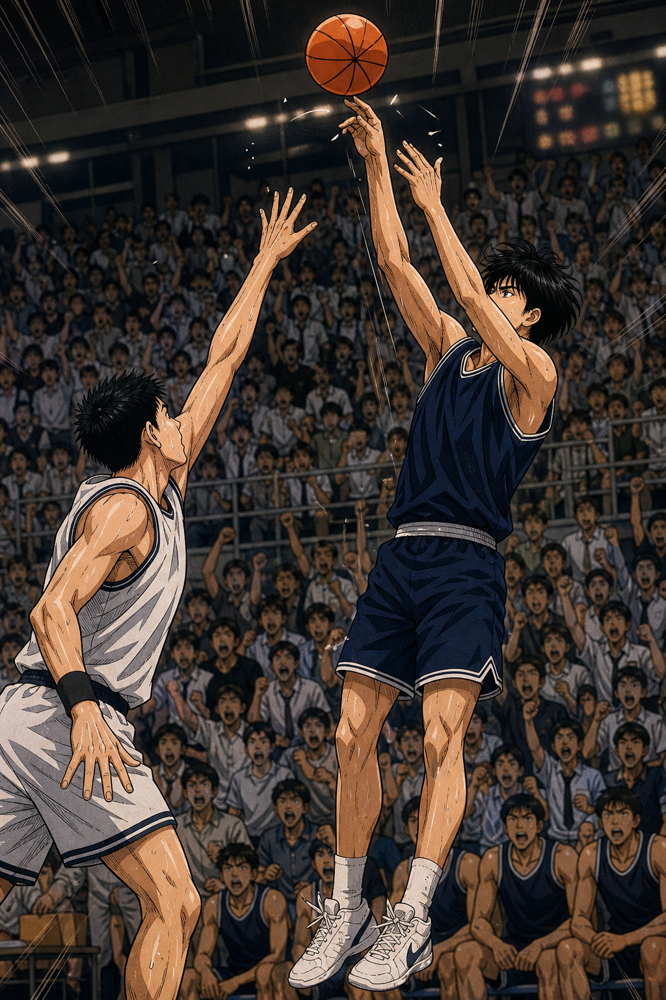

공중전
첫 장면은 덩크입니다. 시선은 림으로 고정되고, 페이지의 톤은 여기서 결정됩니다.

Game Flow
첫 장면은 덩크입니다. 시선은 림으로 고정되고, 페이지의 톤은 여기서 결정됩니다.
경기보다 조용한 연습 후 허들. 캐릭터의 열과 팀의 리듬을 잡아줍니다.
마지막 공격은 슛이 아니라 패스입니다. 장면의 긴장감을 피날레로 넘깁니다.
Gallery
오리지널 이미지 5장을 포스터형 카드로 재구성했습니다.

